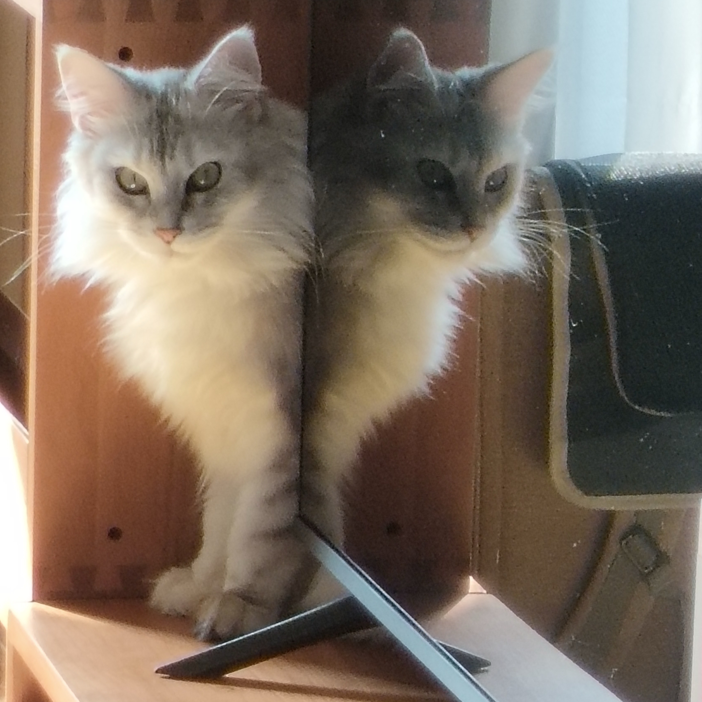
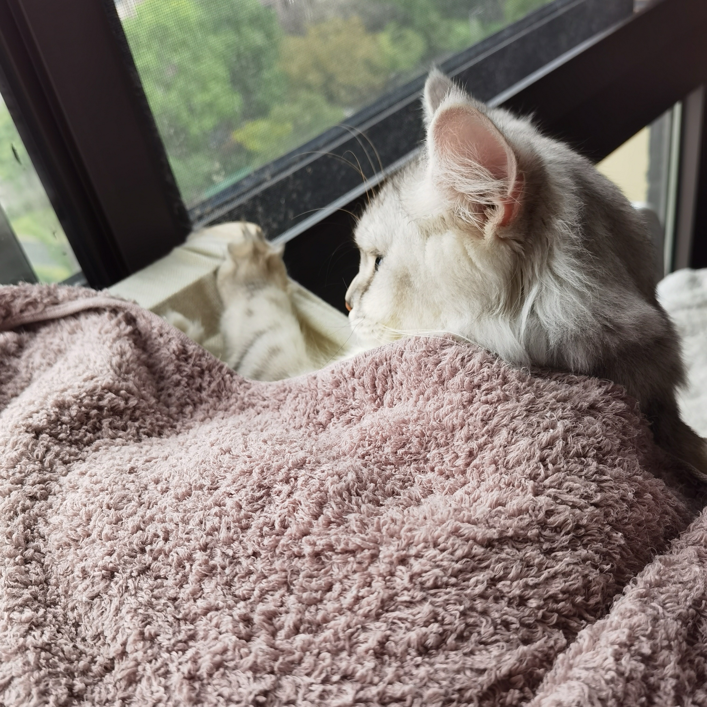
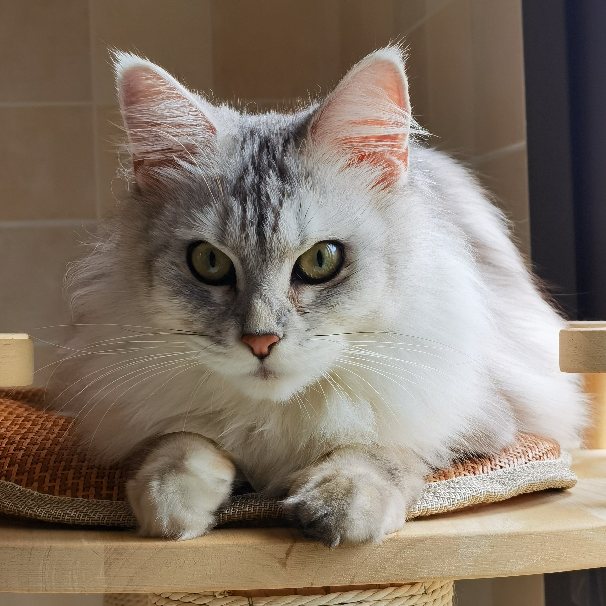
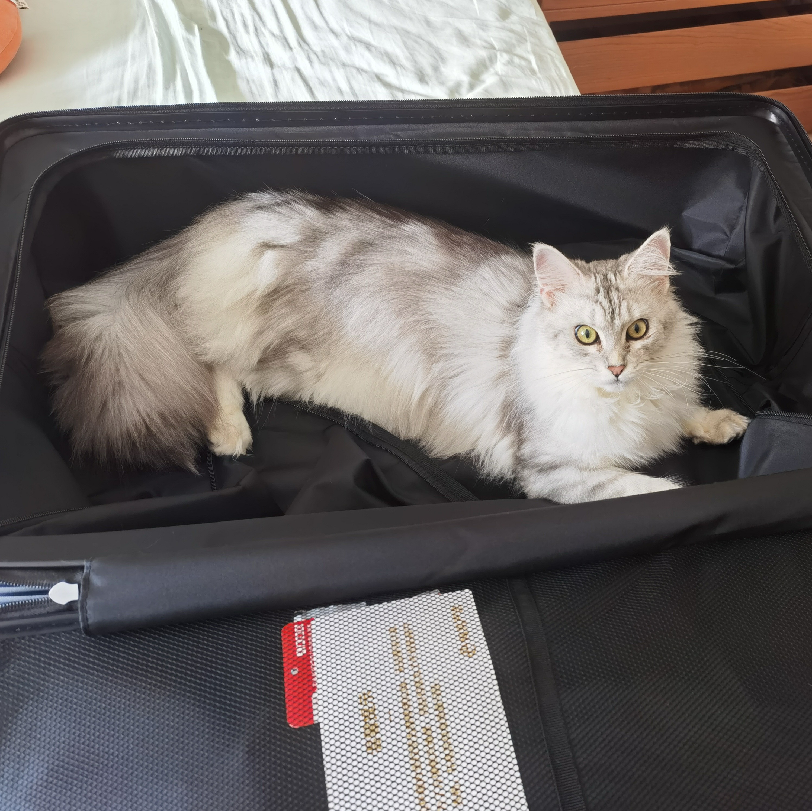
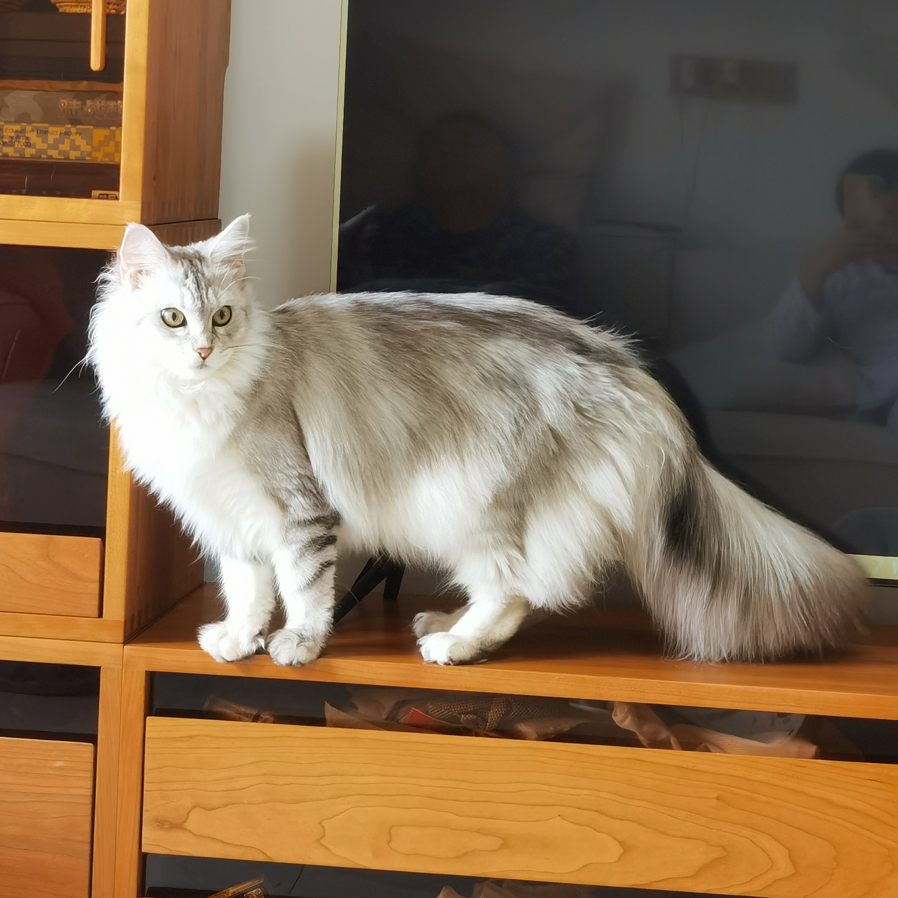
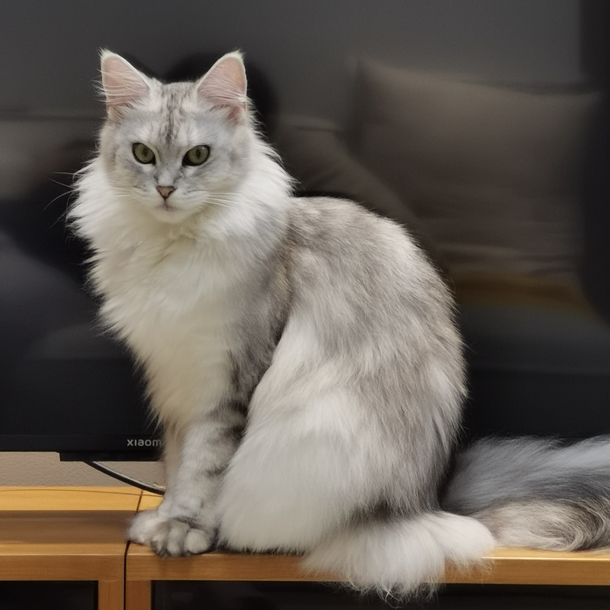

About Me
I love learning new skills and creating beautiful things ✨
I see myself as an unconventional scientist with a keen eye on
humanities and the arts. (Actually math and art are quite similar in
the sense that they both pursue some kind of beauty) I aim to explore
the intersection of math, art, and tech to make the world a better
place.
Education
University of Southern California
Bachlor of Science: Applied and Computational Mathematics
Minor: Computer Science, Artificial Intelligence Applications
Expected Graduation: Spring 2028
GPA: 4.0/4.0
Relevant Coursework
AP Computer Science A
MATH 226: Calculus III
MATH 225: Linear Algebra
MATH 407: Probability Theory
CSCI 170: Discrete Methods in Computer Science
ITP 216: Applied Python
Technical Skills
C++ (Fluent), Python (Fluent), C# (Intermediate), Java (Intermediate)
HTML & CSS (Intermediate), JavaScript (Fluent)
Data Analysis, RDBMS, SQL (Beginner)
Unity Game Engine (Intermediate)
Graphic/Web Design, Figma, Photoshop (Fluent)
Microsoft Excel, Word, PowerPoint (Fluent)
In my free time, I like reading, singing, painting, playing the flute,
playing badminton, listening to music, visiting exhibitions, and
watching movies and musicals!
All Time Favorites
Books: The Fault in Our Stars (by John Green), The Catcher in
the Rye (by J.D. Salinger), The Economic Naturalist (by Robert H.
Frank), Sapiens: A Brief History of Humankind (by Yuval Noah Harari)
Movies & TV Shows: Lord of the Rings, The Big Bang Theory,
Game of Thrones, Breaking Bad, A Dog's Purpose
Musicals: Cats, Notre-Dame de Paris, Mozart L'opéra Rock
Animated Series: Jojo's Bizzare Adventure, Hazbin Hotel, Fate
Musicians: Avril Lavigne, Pink Floyd, The Pretty Reckless,
Zella Day
Artists: Claude Monet, J.M.W. Turner, Gustav Klimt, Zhang
Daqian, Alphonse Mucha
Composers: Debussy, Paganini, Tchaikovsky, Herman Beeftink (for
his amazing flute pieces! YouTube channel: @HermanBeeftinkComposer)
Bow to 饭票, my one and only queen





